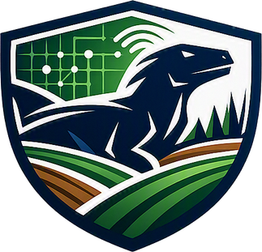

Current weather Not loaded
Connect to the Kavach API and refresh to request a current reading.

Official public-data feeds cover available West Bengal districts. The weather panel is a clearly labeled Sonarpur grid, not a statewide average.
Rajpur Sonarpur, South 24 Parganas, West Bengal, India · postal code 700150
This grid estimate is not crop stress, groundwater, field measurement, or an irrigation recommendation. Crop stress, aquifer conditions, and household vulnerability need verified location-matched observations.
Find official datasets ↗Speak in Bengali or English. Your words will appear below for you to review before sending. The short audio clip is sent to the configured speech provider for transcription.
Only use your own voice or a sample whose speaker has explicitly agreed. The recording is sent to ElevenLabs; Kavach does not save the sample. / নিজের কণ্ঠ বা বক্তার স্পষ্ট সম্মতিপ্রাপ্ত নমুনাই ব্যবহার করুন। রেকর্ডিং ElevenLabs-এ পাঠানো হবে; Kavach নমুনাটি সংরক্ষণ করে না।